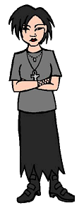

Characters
Characters
|
Andrea |
|---|
|

Full Name: Andrea Current Age: 18 Current Vocation: Graduate of Lawndale High Season One Age: 16 Season One Vocation: Sophomore at Lawndale High First Appearance: Esteemsters
Andrea (pronounced ahn-DREY-ah) is, quite simply, the "goth chick." Little is known about her, but her manner of dress (dark eyeliner, gray shirt, long gray skirt, fishnet glove on one hand... that is, when she's not working as a stock clerk at her parent-enforced job at the local warehouse store) and her quiet demeanor all scream "dark." In fact, if her poetry is any indication, she could give Daria a run for her money in the "bleak outlook on life" department. She is in several of Daria's classes and has developed something of a cult following among the fans, with many of them hanging on her every non-syllable. |
|
Voice:
Andrea's voice is performed by Susie Lewis (seasons 1-3) and Janie Mertz (season four and later). |
|
Trivia |
|